|
return to UKC index |
Club Officers
Elected Officers
As outlined in the UKC Constitution, club decisions are ultimately determined by the Executive Committee, which consists of the elected officers of the club.
Appointed Positions
These appointed positions are essential for keeping the club running smoothly.
The e-mail addresses shown below must be modified or they will not be valid. Just replace _a_ with @. This is done to reduce the amount of spam officers receive from automated web crawlers.
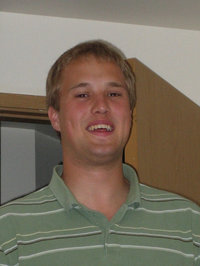
Bryce Gardner
bryceg_at_u.washington.edu
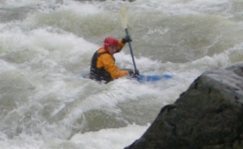
Jackie Callihan
callihan_at_u.washington.edu
Brittany Acheson
britta3_at_u.washington.edu
Andy Clos
closa_at_u.washington.edu
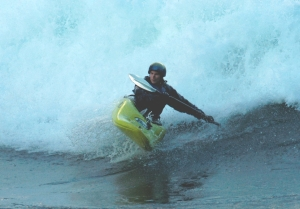
Suzanne Flanary
sflanary_at_u.washington.edu
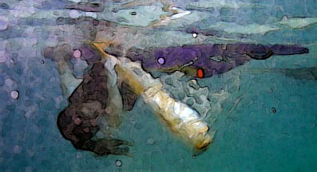
Mike Wagenbach
wagen_at_u.washington.edu
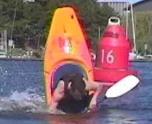
Boris Startsev
startsevboris_at_qwest.net
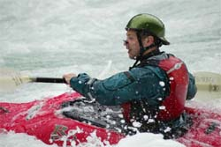
Kennet Belenky
kbelenky_at_u.washington.edu
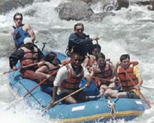
Scott Henry
henrysm_at_u.washington.edu
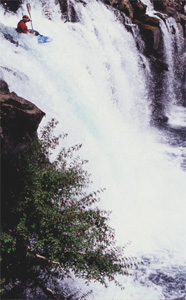
Ryan Hagg
ukc-web_at_u.washington.edu
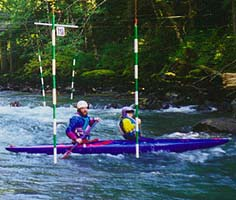
Victor Kress
kress_at_geology.washington.edu
|
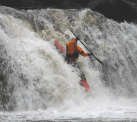 Eric Bessette |
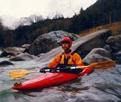 Mike Wagenbach
|
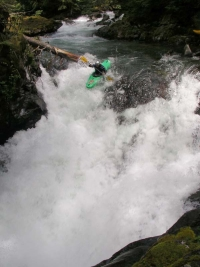 Boris Startsev |
Kennet Belenky
kbelenky_at_u.washington.edu
| Officers / UKC Webmasters ukc-web_at_u.washington.edu | Updated January 13, 2006 |